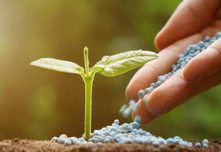
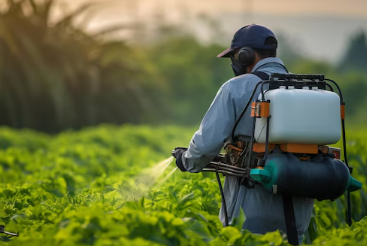
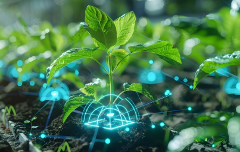
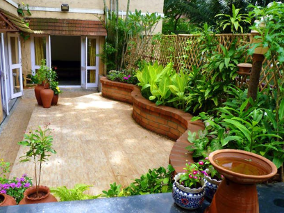
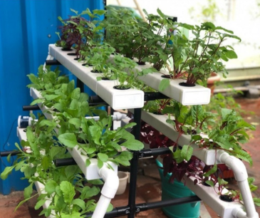
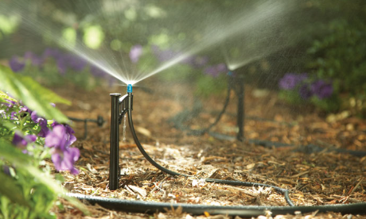
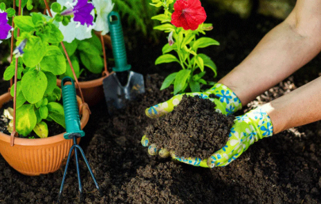
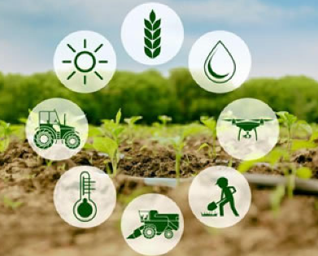

விவசாயிகள் மற்றும் வணிகங்கள் செழிக்க உதவும் வகையில் தரமான விவசாய தீர்வுகளை நாங்கள் வழங்குகிறோம். எங்களின் சேவைகளை கீழே காணுங்கள்.

எங்களின் நவீன நீர்ப்பாசன அமைப்புகள் நீர் பயன்பாட்டை மேம்படுத்தி மகசூலை அதிகரிக்க வடிவமைக்கப்பட்டுள்ளன. முழு அரசு மானிய உதவியுடன் சொட்டுநீர் மற்றும் தெளிப்புநீர் அமைப்புகளை நாங்கள் நிறுவித் தருகிறோம்.

உயர்தர மல்ச்சிங் ஷீட்கள் மண்ணின் ஈரப்பதத்தைப் பாதுகாக்கவும், களைகளைக் கட்டுப்படுத்தவும் உதவுகின்றன. இதற்கான பொருட்கள் வழங்கல், விரிக்கும் பணி மற்றும் தொழில்நுட்ப வழிகாட்டுதலை நாங்கள் வழங்குகிறோம்.

ஒவ்வொரு பயிர் மற்றும் வளர்ச்சி நிலைக்கு ஏற்ப அறிவியல் ரீதியான உரப் பரிந்துரைகள் சமச்சீர் ஊட்டச்சத்து மற்றும் அதிக மகசூலை உறுதி செய்கின்றன. இதில் நுண்ணூட்டச்சத்து மற்றும் பெர்டிகேஷன் அட்டவணைகள் அடங்கும்.

IPM முறைகளைப் பயன்படுத்தி பயிர்களை நிலையான முறையில் பாதுகாக்க பூச்சி, நோய் மற்றும் களை மேலாண்மை தீர்வுகளை வழங்குகிறோம். பயிர் சார்ந்த பூச்சிக்கொல்லி மற்றும் பூஞ்சைக் கொல்லி பரிந்துரைகளை நாங்கள் வழங்குகிறோம்.

சரியான விதையைத் தேர்ந்தெடுப்பது முக்கியமானது. சான்றளிக்கப்பட்ட மற்றும் கலப்பின விதைகளைத் தேர்ந்தெடுப்பதிலும், பருவக்கால பயிர்களைத் திட்டமிடுவதிலும், பயிர் சுழற்சி முறைகளிலும் நாங்கள் வழிகாட்டுகிறோம்.

மண் மற்றும் பயிர் கண்டறியும் சேவைகள் ஊட்டச்சத்து குறைபாடுகளை முன்கூட்டியே கண்டறிய உதவுகின்றன. இதில் மண் மாதிரி பகுப்பாய்வு மற்றும் உரத் திருத்தத் திட்டங்கள் அடங்கும்.

வீடுகள் மற்றும் வணிக வளாகங்களுக்கான தொழில்முறை லேண்ட்ஸ்கேப் வடிவமைப்பு சேவைகள். தோட்டத் திட்டமிடல் மற்றும் நிலையான பசுமை மேம்பாட்டு தீர்வுகளில் நாங்கள் நிபுணத்துவம் பெற்றுள்ளோம்.

அலங்காரச் செடிகள், பூச்செடிகள், உள்அரங்கு மற்றும் வெளிஅரங்கு செடிகளை வழங்குவதோடு, முழுமையான தோட்ட அமைப்பு மற்றும் புல்வெளி மேம்பாட்டு சேவைகளையும் நாங்கள் செய்கிறோம்.

சொட்டுநீர் கோடுகள், தெளிப்பான்கள் மற்றும் தானியங்கி டைமர்கள் உள்ளிட்ட திறமையான தோட்ட நீர்ப்பாசன அமைப்புகள் அனைத்து இடங்களுக்கும் சீரான நீர் பாய்ச்சலை உறுதி செய்கின்றன.

வழக்கமான தோட்ட பராமரிப்பு சேவைகள் உங்கள் தோட்டத்தை ஆரோக்கியமாகவும் அழகாகவும் வைத்திருக்கின்றன. தொழில்முறை கத்தரித்தல் மற்றும் பருவகால பராமரிப்பு ஒப்பந்தங்களை நாங்கள் வழங்குகிறோம்.
நிபுணத்துவ விவசாய ஆலோசனைகள் மூலம் கள ஆய்வு, பயிர் நோய் கண்டறிதல் மற்றும் பல்வேறு அரசு திட்டங்களுக்கான தொழில்நுட்ப வழிகாட்டுதலை நாங்கள் வழங்குகிறோம்.

விவசாயிகள் நம்பகமான மற்றும் உற்பத்தித் திறன் கொண்ட வெளியீட்டைப் பெற உயர்தர உரங்கள், பூச்சிக்கொல்லிகள், விதைகள் மற்றும் நீர்ப்பாசனப் பொருட்களை நாங்கள் வழங்குகிறோம்.
உங்கள் விவசாயத் தேவைகள் மற்றும் உங்களுக்காக வடிவமைக்கப்பட்ட தீர்வுகளைப் பற்றி விவாதிக்க இன்றே எங்களைத் தொடர்பு கொள்ளுங்கள்.
தொடர்பு கொள்ள